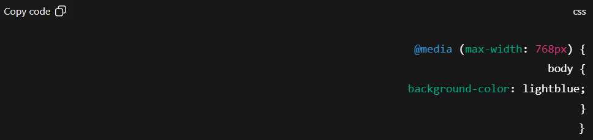

Introduction
Have you ever opened a website on your phone and found it hard to read because the text was too small or the layout was broken? That’s what happens when a website is not responsive. Responsive Web Design (RWD) is the practice of making websites look good and function well on all devices — desktops, tablets, and smartphones.
What is Responsive Web Design?
Responsive Web Design ensures that a single website adapts to different screen sizes and resolutions. It uses: Flexible layouts → Grids that resize based on screen width. Fluid images → Images that shrink or expand to fit the container. Media queries → CSS rules that change the design for specific screen sizes. 👉 Example: A navigation bar may appear as a full menu on desktop, but collapse into a hamburger menu on mobile.
Why Responsive Design Matters
User Experience (UX) → Visitors can browse easily without zooming or scrolling awkwardly. SEO Benefits → Google ranks responsive websites higher in search results. One Website for All Devices → No need to build a separate mobile site. Higher Engagement → People stay longer and are more likely to return.
My Study Method for Responsive Design
Here’s how I personally learn responsive web design: YouTube Tutorials → I start with free playlists that explain media queries, Flexbox, and CSS Grid. Practice Projects → I build small websites (like my Coffee Website and Honey Website) and make them mobile-friendly. Imitation Learning → I watch developers build responsive websites and try to copy them line by line, understanding how they adapt layouts. Certifications → I use LinkedIn Learning (via NMSkills) and Coursera for structured learning and certificates that validate my skills.
Tools & Techniques You Should Know
Flexbox & CSS Grid → For flexible layouts. Responsive Images → Using max-width: 100% and height: auto. Testing Tools → Chrome DevTools for simulating different devices.
Conclusion
Responsive Web Design is not optional — it’s essential. In today’s world, most users browse from mobile devices, and a website that isn’t mobile-friendly risks losing visitors.
By learning media queries,
Flexbox, and Grid, and practicing with real projects, you can master
responsiveness and make your websites professional and user-friendly.